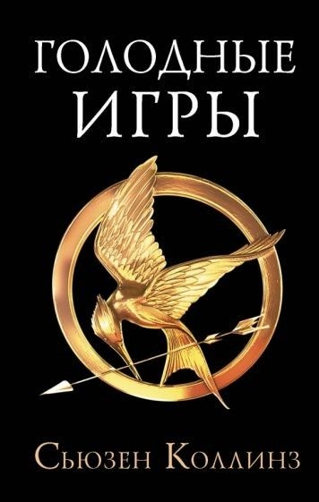
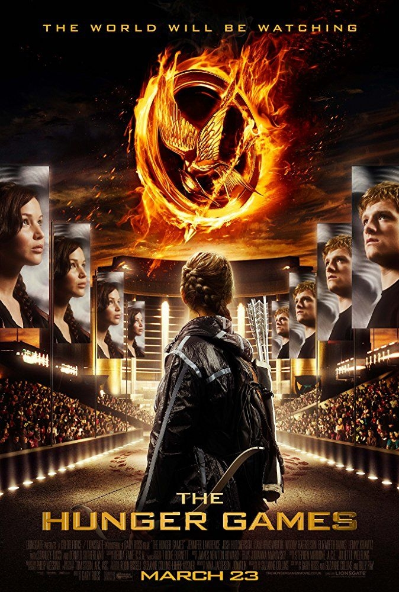
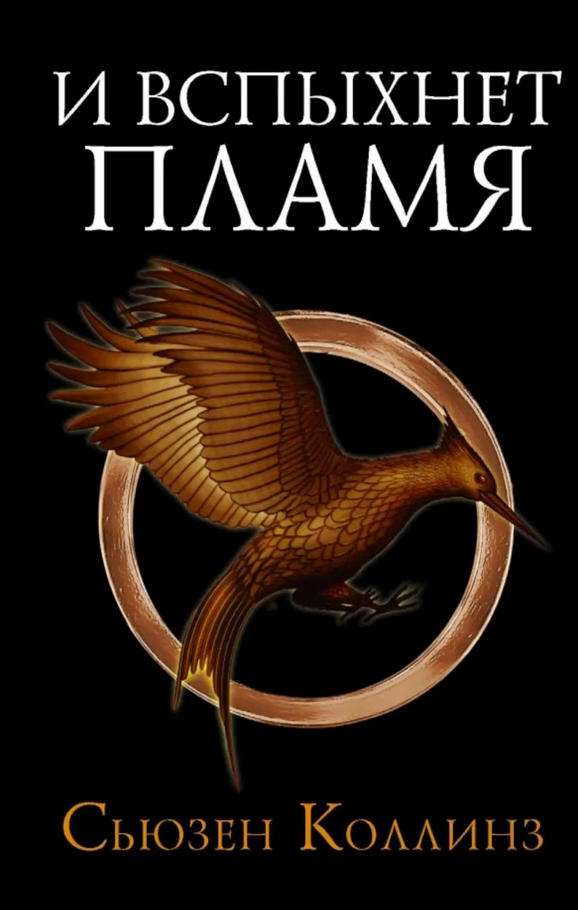
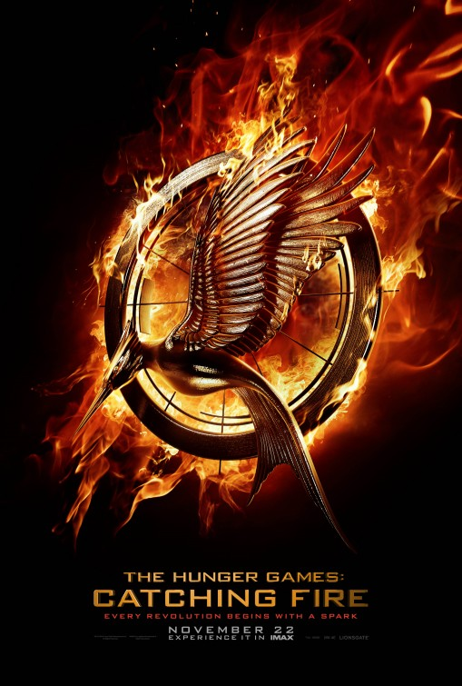
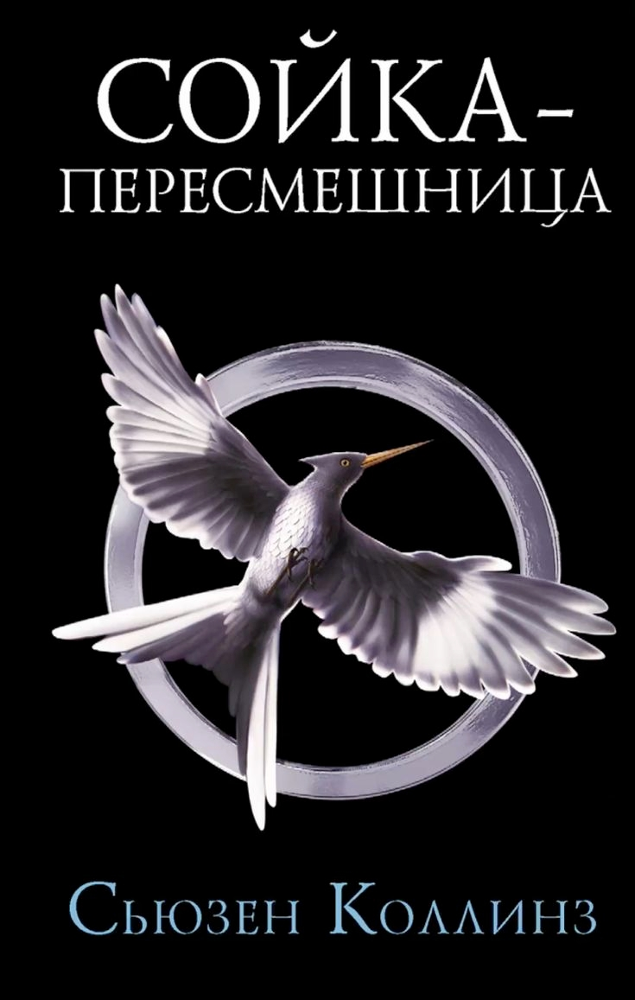
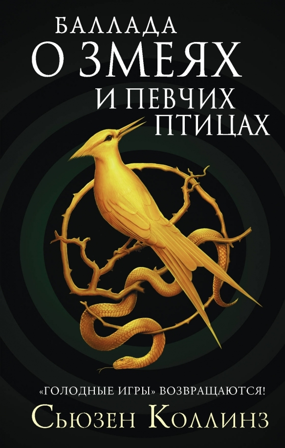
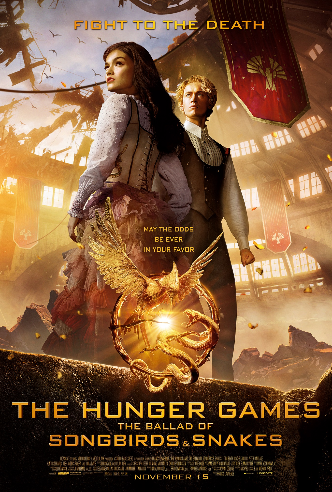

КНИГА

Голодные игры
Год издания: 2008
Глубина внутреннего мира и суровая реальность. Книга погружает читателя в беспощадную повседневность Дистрикта 12. Мы видим мир глазами Китнисс: её постоянное чувство голода, страх за сестру и тяжелые мысли охотницы. Сцены на Арене прописаны максимально детально и жестоко, без цензуры, а внутренние монологи героини раскрывают её мотивацию и травмы. Это история о выживании, где каждое решение дается ценой боли.
ФИЛЬМ

Голодные игры
Режиссёр: Гэри Росс
Год выхода: 2012
Визуальное погружение и масштаб Капитолия. Экранизация делает ставку на картинку: зритель видит кричащую роскошь Капитолия, безумные наряды его жителей и контраст с нищетой дистриктов. Внутренние монологи Китнисс заменены на действия, а жестокость Игр визуально смягчена ради возрастного рейтинга. Однако фильм отлично передает динамику, напряжение и эмоциональную связь персонажей через актерскую игру и музыку.
КЛЮЧЕВЫЕ ОТЛИЧИЯ
Вердикт
Если вы хотите понять мотивы Китнисс и прочувствовать весь ужас системы Панема — читайте книгу. Если вы хотите увидеть масштаб, услышать великолепный саундтрек и насладиться визуалом — включайте фильм. Идеальный вариант: прочитать книгу, а затем пересмотреть экранизацию, чтобы заметить все пасхалки.
КНИГА

И вспыхнет пламя
Год издания: 2009
Психологическая глубина и политическое напряжение. Книга начинается с последствий первой Арены: Китнисс страдает от посттравматического стрессового расстройства и кошмаров. Во время Тура победителей по дистриктам она своими глазами видит нищету и зарождающиеся бунты, что делает её не просто выжившей, а настоящим символом сопротивления. Подготовка к Квартальной бойне описана через призму страха и политических игр, а сама Арена в книге гораздо более смертоносна и жестока.
ФИЛЬМ

И вспыхнет пламя
Режиссёр: Фрэнсис Лоуренс
Год выхода: 2013
Зрелищность и визуальный масштаб. Экранизация концентрируется на грандиозности Капитолия, роскошных нарядах и зрелищных церемониях, что создаёт яркий контраст с мрачными дистриктами. Фильм делает акцент на любовной линии Китнисс и Пита, необходимой для выживания на публике. Сцены на Арене сжаты по сравнению с книгой, а политические диалоги упрощены, однако фильм отлично передаёт нарастающее напряжение и ужас Квартальной бойни через динамичный экшен и спецэффекты.
КЛЮЧЕВЫЕ ОТЛИЧИЯ
Вердикт
«И вспыхнет пламя» — редкий случай, когда экранизация почти не уступает книге. Если вы хотите прочувствовать всю тяжесть посттравматического синдрома Китнисс, её внутренние метания и медленное, но неизбежное осознание того, что бунт уже не остановить, — читайте книгу. Если же вы хотите увидеть грандиозный Тур победителей, зрелищную Квартальную бойню и насладиться потрясающей игрой актеров — включайте фильм.
КНИГА

Сойка-пересмешница
Год издания: 2009
В книге нет разделения на части. Китнисс проходит путь от сломленной девушки в Дистрикте 13 до финальной битвы в Капитолии. Все события — от пропагандистских роликов до смерти Прим — происходят в рамках одного непрерывного повествования.
ФИЛЬМЫ

Часть 1
2014

Часть 2
2015
Сойка-пересмешница.
Части I и II
Режиссёр: Фрэнсис Лоуренс
Годы выхода: 2014 / 2015
Зрелищность и визуальный масштаб. Экранизация концентрируется на грандиозности Капитолия, роскошных нарядах и зрелищных церемониях, что создаёт яркий контраст с мрачными дистриктами. Фильм делает акцент на любовной линии Китнисс и Пита, необходимой для выживания на публике. Сцены на Арене сжаты по сравнению с книгой, а политические диалоги упрощены, однако фильм отлично передаёт нарастающее напряжение и ужас Квартальной бойни через динамичный экшен и спецэффекты.
КЛЮЧЕВЫЕ ОТЛИЧИЯ
Вердикт
«Сойка-пересмешница» — это случай, когда экранизация берет эпический масштаб и визуальную красоту, но теряет часть душевной тяжести оригинала. Если вы хотите прочувствовать весь ужас войны, увидеть, как жестокость ломает даже самых сильных, и понять истинную цену революции — читайте книгу. Это мрачное, местами шокирующее и очень честное повествование . Если же вы хотите увидеть масштабный блокбастер с потрясающими спецэффектами, напряженными сценами штурма Капитолия и финальной битвой, которая держит в напряжении до последней минуты — смотрите фильмы. Это зрелищное завершение франшизы, которое, однако, сглаживает самые острые углы истории.
КНИГА

Баллада о змеях и певчих птицах
Год издания: 2020
Психологическая глубина и внутренняя борьба. Книга позволяет читателю буквально заглянуть в голову молодого Кориолана Сноу. Через его внутренние монологи раскрывается, как амбициозный, но обедневший юноша постепенно оправдывает для себя жестокость и предательство. Это история о моральном падении, где каждое решение героя обусловлено его тщеславием, расчетом и страхом бедности. Читатель видит все «змеиные» мысли Сноу, которые он тщательно скрывает за маской обаятельного и вежливого студента Академии .
ФИЛЬМ

Баллада о змеях и певчих птицах
Режиссёр: Фрэнсис Лоуренс
Год выхода: 2023
Визуальный масштаб и смягчение красок. Экранизация впечатляет атмосферой послевоенного Капитолия и музыкальными номерами Люси Грей. Однако фильм теряет ключевой элемент книги — внутренний голос Сноу. Без закадровых мыслей его поступки кажутся более импульсивными и менее расчетливыми, а сам персонаж выглядит мягче и человечнее, чем в оригинале . Фильм отлично передает внешние события и динамику 10-х Голодных игр, но жертвует психологизмом главного героя ради хронометража.
КЛЮЧЕВЫЕ ОТЛИЧИЯ
Вердикт
«Сойка-пересмешница» — это случай, когда экранизация берет эпический масштаб и визуальную красоту, но теряет часть душевной тяжести оригинала. Если вы хотите прочувствовать весь ужас войны, увидеть, как жестокость ломает даже самых сильных, и понять истинную цену революции — читайте книгу. Это мрачное, местами шокирующее и очень честное повествование . Если же вы хотите увидеть масштабный блокбастер с потрясающими спецэффектами, напряженными сценами штурма Капитолия и финальной битвой, которая держит в напряжении до последней минуты — смотрите фильмы. Это зрелищное завершение франшизы, которое, однако, сглаживает самые острые углы истории.